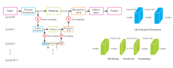
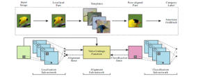

Xiaoyong Shen AI Team Manager at Tencent
10/F, Malata Building, Kejizhongyi Road,
Nanshan District, Shenzhen 518075, P.R. China
Email:
|

|


Biography [CV]
I got my Ph.D. degree in Computer Science and Engineering Department in the Chinese University of Hong Kong in 2016. My supervisor is Prof. Jiaya Jia. Before that, I received the B. S. degree in Computational Mathematics and M. S. degree in Applied Mathematics from Zhejiang University in 2010 and 2012 respectively, under the supervision of Prof. Ligang Liu.
My research interest includes computer graphics and computer vision.
I am a team manager at Tencent working with Prof. Jiaya Jia. We are recruiting self-motivated interns/full-time researchers in computer vision and machine learning. Please send your CV to me if you are interested to it.
Publications [Google Scholar]
| Ruiyu Li, Kaican Li, Yi-Chun Kuo, Michelle Shu, Xiaojuan Qi, Xiaoyong Shen, Jiaya Jia, "Referring Image Segmentation via Recurrent Refinement Networks" IEEE Conference on Computer Vision and Pattern Recognition (CVPR), 2018.
[paper] |
|
| Xin Tao, Hongyun Gao, Xiaoyong Shen, Jue Wang, Jiaya Jia, "Scale-recurrent Network for Deep Image Deblurring" IEEE Conference on Computer Vision and Pattern Recognition (CVPR), 2018. | |
| Ying-Cong Chen, Huaijia Lin, Michelle Shu, Ruiyu Li, Xin Tao, Yangang ye, Xiaoyong Shen, Jiaya Jia, "Facelet-Bank for Fast Portrait Manipulation" IEEE Conference on Computer Vision and Pattern Recognition (CVPR), 2018. | |
| Hengshuang Zhao, Xiaojuan Qi, Xiaoyong Shen, Jianping Shi, Jiaya Jia, " ICNet for Real-Time Semantic Segmentation on High-Resolution Images" European Conference on Computer Vision (ECCV), 2018. | |
| Ying-cong Chen, Xiaoyong Shen, Jiaya Jia, "Makeup-Go: Blind Reversion of Portrait Edit" IEEE International Conference on Computer Vision (ICCV), 2017.
[paper] |
|
| Chao Zhou, Hong Zhang, Xiaoyong Shen, Jiaya Jia, "Unsupervised Learning of Stereo Matching" IEEE International Conference on Computer Vision (ICCV), 2017.
[paper] |
|
| Xin Tao, Chao Zhou, Xiaoyong Shen, Jue Wang, Jiaya Jia, "Zero-order Reverse Filtering" IEEE International Conference on Computer Vision (ICCV), 2017. | |
| Xiaoyong Shen, Hongyun Gao, Xin Tao, Chao Zhou,Jiaya Jia, " High-Quality Correspondence and Segmentation Estimation for Dual-Lens Smart-Phone Portraits " IEEE International Conference on Computer Vision (ICCV), 2017.
[paper] |
|
| Xiaoyong Shen, Chao Zhou, Li Xu, Jiaya Jia, " Multual-Structure for Joint Image Filtering " International Journal of Computer Vision (IJCV), 2017.
[paper] |
|
| Xiaoyong Shen, Ruixing Wang, Hengshuang Zhao, Jiaya Jia, " Automatic Real-time Background Cut for Portrait Videos " ArXiv 2017.
[paper] |
|
|  | Xiaoyong Shen, Ying-Cong Chen, Xin Tao, Jiaya Jia, " Convolutional Neural Pyramid for Image Processing " ArXiv 2017. |
| Xiaoyong Shen, Xin Tao, Chao Zhou, Hongyun Gao, Jiaya Jia, " Regional Foremost Matching for Internet Images " ACM Transactions on Graphics, 2016 (Proc. SIGGRAPH ASIA 2016).
[project][paper] |
|
| Xiaoyong Shen, Xin Tao, Hongyun Gao, Chao Zhou, Jiaya Jia, "Deep Automatic Portrait Matting" European Conference on Computer Vision (ECCV) , 2016. (Spotlight Presentation) | |
| Xiaoyong Shen, Aaron Hertzmann, Jiaya Jia, Sylvain Paris, Brian Price, Eli Shechtman, Ian Sachs, "Automatic Portrait Segmentation for Image Stylization" Computer Graphics Forum, 35(2), 2016 ( Proc. Eureographics 2016) . | |

|
Xiaoyong Shen, Qiong Yan, Li Xu, Lizhuang Ma, Jiaya Jia, "Multispectral Joint Image Restoration via Optimizing a Scale Map" IEEE Transactions on Pattern Analysis and Machine Intelligence (TPAMI), vol. 37, no. 12, 2015. |
| Xiaoyong Shen, Chao Zhou, Li Xu, Jiaya Jia, "Mutual-Structure for Joint Filtering" IEEE International Conference on Computer Vision (ICCV) , 2015. (Oral Presentation) | |
|  | Di Lin, Xiaoyong Shen, Cewu Lu, Jiaya Jia, "Deep LAC: Deep Localization, Alignment and Classification for Fine-grained Recognition" IEEE Conference on Computer Vision and Pattern Recognition (CVPR), 2015.
[paper] |

|
Xiaoyong Shen, Li Xu, Qi Zhang, Jiaya Jia, "Multi-modal and Multi-spectral Registration for Natural Images" European Conference on Computer Vision (ECCV), 2014. |
| Qi Zhang, Xiaoyong Shen, Li Xu, Jiaya Jia, "Rolling Guidance Filter" European Conference on Computer Vision (ECCV) , 2014. (Oral Presentation) | |
| Qiong Yan, Xiaoyong Shen, Li Xu, Shaojie Zhuo, Xiaopeng Zhang, Liang Shen, Jiaya Jia, "Cross-Field Joint Image Restoration via Scale Map" IEEE International Conference on Computer Vision (ICCV), 2013. | |

|
Jinliang Wu, Xiaoyong Shen, Wei Zhu, Ligang Liu, "Mesh Saliency with Global Rarity" Graphical Models, 75(5): 255-264, 2013. |
| Jinliang Wu, Xiaoyong Shen, Ligang Liu, "Interactive Two-Scale Color-to-Gray" The Visual Computer (Proc. Computer Graphics International), 2013.
[paper] |
Research Experience
Adobe Research
Advisor: Ian Sachs, Aaron Hertzmann, Sylvain Paris, Eli Schechtman and Brian Price
The Chinese University of Hong Kong
Advisor: Jiaya Jia
Honors & Awards
| Outstanding Graduate Awards of Zhejiang University, 2012 |
| Excellent Bachelor Thesis in Zhejiang University, 2010 |
| Outstanding Graduate Awards of Zhejiang University, 2010 |
| National Scholarship, 2009 |
| The First Prize of Research and Renovation of ZJU, 2008 |
| National Scholarship of Encouragement, 2008 |
| Excellent Student Scholarship in Zhejiang University, 2007-2010 |
| The Title of Excellent All-round Student in Zhejiang University , 2007-2010 |
| Outstanding Student Cadres in Zhejiang University, 2008 |
Professional Activities
Teaching
| 2014-2015 | Fall | CSCI1580 Visual Programming |
| 2013-2014 | Spring | ENGG2600A Technology, Society and Engineering Practice |
| 2013-2014 | Fall | CSCI1520 Computer Principles and C++ Programming |
Miscellanies
Research Papers
Computer Graphics Papers, Computer Vision Papers
Some of My Friends
Li Xu, Cewu Lu, Qiong Yan, Jianping Shi, Xiaoguang Han, Ruizhen Hu, Renjie Liao, Ziyang Ma, Xin Tao

© Xiaoyong Shen